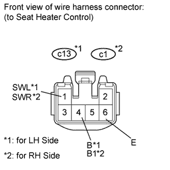
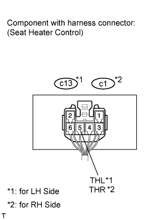

SEAT HEATER SYSTEM > ON-VEHICLE INSPECTION |
| 1. INSPECT SEAT HEATER CONTROL SUB-ASSEMBLY (for Front Side) |
 |
Disconnect the c13 and c1 heater control connectors.
Measure the resistance according to the value(s) in the table below.
| Tester Connection | Specified Condition |
| c13-6 (E) - Body ground | Below 1 Ω |
| Tester Connection | Specified Condition |
| c1-6 (E) - Body ground | Below 1 Ω |
Measure the voltage according to the value(s) in the table below.
| Tester Connection | Switch Condition | Specified Condition |
| c13-1 (SWL) - c13-6 (E) | Engine switch on (IG), seat heater switch off | Below 1 V |
| Engine switch on (IG), seat heater switch on | 11 to 14 V | |
| c13-4 (B) - c13-6 (E) | Engine switch off | Below 1 V |
| Engine switch on (IG) | 11 to 14 V |
| Tester Connection | Switch Condition | Specified Condition |
| c1-1 (SWR) - c1-6 (E) | Engine switch on (IG), seat heater switch off | Below 1 V |
| Engine switch on (IG), seat heater switch on | 11 to 14 V | |
| c1-4 (B1) - c1-6 (E) | Engine switch off | Below 1 V |
| Engine switch on (IG) | 11 to 14 V |
Connect the c13 and c1 heater control connectors.
 |
Measure the voltage according to the value(s) in the table below.
| Tester Connection | Switch Condition | Specified Condition |
| c13-5 (THL) - Body ground | Engine switch on (IG), seat heater switch on, volume Min→ Max | Gradual increase from below 1 V to 11 to 14 V |
| Tester Connection | Switch Condition | Specified Condition |
| c1-5 (THR) - Body ground | Engine switch on (IG), seat heater switch on, volume Min → Max | Gradual increase from below 1 V to 11 to 14 V |